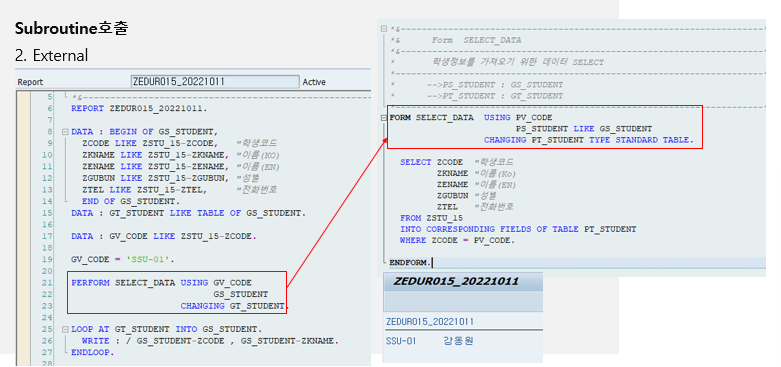

20221013 - SUBROUTINE
Subroutine
- internal
- external
- dynamic
PERFORM 구문을 이용하여 ABAP 프로그램 내에서 Subroutine 호출 or 다른 ABAP 프로그램 내의 Subroutine 호출
Internal
같은 ABAP 프로그램에서 선언한 Subroutine을 호출
즉, PERFORM 구문으로 같은 프로그램 내 호출
External
다른 ABAP 프로그램의 Subroutine을 호출하여 사용
외부프로그램을 호출할 때는 IF FOUND 구문을 사용하여 해당 Subroutine이 존재하는지 체크 필수 (만약 존재하지 않는 Subroutine을 호출하면 Dump ERROR)
PERFORM FROM_NAME(PROGRAM) IF FOUND USING P_NAME CHANGING P_NAME.


DATA: BEGIN OF GS_STUDENT,
ZCODE LIKE ZSTU_15-ZCODE,
ZKNAME LIKE ZSTU_15-ZKNAME,
ZENAME LIKE ZSTU_15-ZENAME,
ZGUBUN LIKE ZSTU_15-ZGUBUN,
ZTEL LIKE ZSTU_15-ZTEL,
END OF GS_STUDENT.
DATA: GT_STUDENT LIKE TABLE OF GS_STUDENT.
DATA: GV_CODE LIKE ZSTU_15-ZCODE.
GV_CODE = 'SSU-01'.
PERFORM SELECT_DATA USING GV_CODE GS_STUDENT CHANGING GT_STUDENT.
LOOP AT GT_STUDENT INTO GS_STUDENT.
WRITE:/ GS_STUDENT-ZCODE, GS_STUDENT-ZKNAME.
ENDLOOP.
FORM SELECT_DATA USING PV_CODE PS_STUDENT LIKE GS_STUDENT CHANGING PT_STUDENT TYPE STANDARD TABLE.
SELECT ZCODE ZKNAME ZENAME ZGUBUN ZTEL
FROM ZSTU_15 INTO CORRESPONDING FIELDS OF TABLE PT_STUDENT WHERE ZCODE = PV_CODE.
ENDFORM.


DATA: BEGIN OF GS_STUDENT,
ZCODE LIKE ZSTU_15-ZCODE,
ZKNAME LIKE ZSTU_15-ZKNAME,
ZENAME LIKE ZSTU_15-ZENAME,
ZGUBUN LIKE ZSTU_15-ZGUBUN,
ZTEL LIKE ZSTU_15-ZTEL,
END OF GS_STUDENT.
DATA: GT_STUDENT LIKE TABLE OF GS_STUDENT.
DATA: GV_CODE LIKE ZSTU_15-ZCODE.
GV_CODE = 'SSU-02'.
PERFORM SELECT_DATA(ZEDUR1_20221017) IF FOUND USING GV_CODE GS_STUDENT CHANGING GT_STUDENT.
LOOP AT GT_STUDENT INTO GS_STUDENT.
WRITE: / GS_STUDENT-ZCODE, GS_STUDENT-ZKNAME.
ENDLOOP.
Dynamic
외부 프로그램의 Subroutine을 호출할 경우 이름을 동적으로 지정
PERFORM (NAME) IN PROGRAM (Program name) IF FOUND USING P_NAME CHANGING P_NAME.

DATA: BEGIN OF GS_STUDENT,
ZCODE LIKE ZSTU_15-ZCODE,
ZKNAME LIKE ZSTU_15-ZKNAME,
ZENAME LIKE ZSTU_15-ZENAME,
ZGUBUN LIKE ZSTU_15-ZGUBUN,
ZTEL LIKE ZSTU_15-ZTEL,
END OF GS_STUDENT.
DATA: GT_STUDENT LIKE TABLE OF GS_STUDENT.
DATA: GV_CODE LIKE ZSTU_15-ZCODE,
GV_PNAME(20) TYPE C VALUE 'ZEDUR1_20221017',
GV_FORMNAME(20) TYPE C VALUE 'SELECT_DATA'.
GV_CODE = 'SSU-02'.
TRANSLATE GV_PNAME TO UPPER CASE.
PERFORM (GV_FORMNAME) IN PROGRAM (GV_PNAME) IF FOUND USING GV_CODE GS_STUDENT CHANGING GT_STUDENT.
LOOP AT GT_STUDENT INTO GS_STUDENT.
WRITE: / GS_STUDENT-ZCODE, GS_STUDENT-ZKNAME.
ENDLOOP.
순환구문
ABAP 프로그램에서 사용할 수 있는 순환반복구문
DO ~ ENDDO
어떤 특정한 부분을 반복하여 처리하고자 할 때 사용
DO (N) TIMES
ENDDON은 숫자 혹은 변수 가능
회수를 지정하지 않으면 무한 LOOP 수행
현재 순환횟수는 시스템변수 SY-INDEX에 저장

DATA: LV_NUM TYPE I, LV_SUM TYPE I.
LV_NUM = 5.
DO LV_NUM TIMES.
ADD SY-INDEX TO LV_SUM.
WRITE:/ SY-INDEX.
ENDDO.
WRITE:/ 'SUM OF INDEXES: ', LV_SUM.

DATA: LV_NUM TYPE I, LV_SUM TYPE I.
LV_NUM = 5.
DO LV_NUM TIMES.
IF SY-INDEX = '3'.
EXIT.
ENDIF.
ADD SY-INDEX TO LV_SUM.
WRITE:/ SY-INDEX.
ENDDO.
WRITE:/ 'SUM OF INDEXES: ', LV_SUM.

DATA: LV_NUM TYPE I, LV_SUM TYPE I.
LV_NUM = 5.
DO LV_NUM TIMES.
IF SY-INDEX = '3'.
STOP.
ENDIF.
ADD SY-INDEX TO LV_SUM.
WRITE:/ SY-INDEX.
ENDDO.
WRITE:/ 'SUM OF INDEXES: ', LV_SUM.

DATA: LV_NUM TYPE I, LV_SUM TYPE I.
LV_NUM = 5.
DO LV_NUM TIMES.
IF SY-INDEX = '3'.
CONTINUE.
ENDIF.
ADD SY-INDEX TO LV_SUM.
WRITE:/ SY-INDEX.
ENDDO.
WRITE:/ 'SUM OF INDEXES: ', LV_SUM.

DATA: LV_NUM TYPE I, LV_SUM TYPE I.
LV_NUM = 5.
DO LV_NUM TIMES.
CHECK SY-INDEX = '3'.
ADD SY-INDEX TO LV_SUM.
WRITE:/ SY-INDEX.
ENDDO.
WRITE:/ 'SUM OF INDEXES: ', LV_SUM.
WHILE ~ ENDWHILE
DO 명령문과 동일하게 어떤 특정한 부분을 반복하여 처리하고자 할 때 사용
DO는 무조건 반복을 했다면, WHILE은 logical expression을 사용하여 그 결과 값이 참인 동안에만 계속 반복
WHILE logical expression
ENDWHILE현재 순환 횟수는 시스템 변수 SY-INDEX에 저장

DATA: GV_NUM TYPE I, GV_CHECK TYPE C.
GV_NUM = 5.
WHILE GV_NUM = 5.
GV_CHECK = 'X'.
GV_NUM = 1.
ENDWHILE.
IF GV_CHECK = 'X'.
WRITE:/ 'CHECK IS COMPLETED.'.
ENDIF.
in-class practice
1번
ZEDU15_001 데이터를 SELECT하는 PERFORM문 행성
Z_STATUS = 2인 경우 LOOP문을 빠져나가게
수량만큼 DO문 태워 총 합계 구하기 (수량: 정수형 로컬변수 선언하여 ZEDU15_001-VOLUM값 이동)
EX) 수량 2.000, 금액 1000원이면 LV_VOLUM = 2, 총합계 2000
ZSTU_15 JOIN 통해 아이디별 이름 (ZKNAME) 가져오기
2번
ZEDU15_002에서 WHILE-ENDWHILE 이용하여 ZZ_STATUS 값이 1인 건은 ZZ_CODE에 따라 배송일자 변경
A인 경우 주문일자 + 1 = 배송일자, 배송시간 = 시스템시간
B, C는 +2
그 외 +3
배송일자가 업데이트 되면 ZZ_STATUS = 2로 업데이트
DATA: BEGIN OF GS_DELIVERY.
INCLUDE TYPE ZEDU15_002.
DATA: END OF GS_DELIVERY.
DATA: GT_DELIVERY LIKE TABLE OF GS_DELIVERY.
SELECT * FROM ZEDU15_002 INTO CORRESPONDING FIELDS OF TABLE GT_DELIVERY.
DATA: LV_CON TYPE C VALUE 'O'.
WHILE LV_CON = 'O'.
LOOP AT GT_DELIVERY INTO GS_DELIVERY.
IF GS_DELIVERY-ZZ_STATUS = '1'.
IF GS_DELIVERY-ZZ_CODE = 'A'.
GS_DELIVERY-Z_BDATE = GS_DELIVERY-Z_JDATE + 1.
GS_DELIVERY-ZZ_STATUS = '2'.
ELSEIF ( GS_DELIVERY-ZZ_CODE = 'B' ) OR ( GS_DELIVERY-ZZ_CODE = 'C' ).
GS_DELIVERY-Z_BDATE = GS_DELIVERY-Z_JDATE + 2.
GS_DELIVERY-ZZ_STATUS = '2'.
ELSE.
GS_DELIVERY-Z_BDATE = GS_DELIVERY-Z_JDATE + 3.
GS_DELIVERY-ZZ_STATUS = '2'.
ENDIF.
ENDIF.
MODIFY GT_DELIVERY FROM GS_DELIVERY.
ENDLOOP.
LV_CON = 'X'.
ENDWHILE.
BREAK-POINT.
DATA: BEGIN OF GS_ORDER.
INCLUDE TYPE ZEDU15_001.
DATA: ZKNAME TYPE ZSTU_15-ZKNAME.
DATA: END OF GS_ORDER.
DATA: GT_ORDER LIKE TABLE OF GS_ORDER.
PERFORM SELECT_DATA USING GS_ORDER GT_ORDER.
FORM SELECT_DATA USING PS_ORDER LIKE GS_ORDER PT_ORDER LIKE GT_ORDER.
SELECT * FROM ZEDU15_001 INTO CORRESPONDING FIELDS OF TABLE PT_ORDER.
DATA: LV_SUM TYPE I.
LV_SUM = 0.
LOOP AT PT_ORDER INTO PS_ORDER.
IF PS_ORDER-Z_STATUS = '2'.
EXIT.
ENDIF.
LV_SUM = PS_ORDER-Z_SUM * PS_ORDER-VOLUM.
SELECT ZKNAME INTO CORRESPONDING FIELDS OF PS_ORDER FROM ZSTU_15
INNER JOIN ZEDU15_001 ON ZSTU_15~ZCODE = ZEDU15_001~ZID
WHERE ZSTU_15~ZCODE = PS_ORDER-ZID.
ENDSELECT.
ENDLOOP.
ENDFORM.